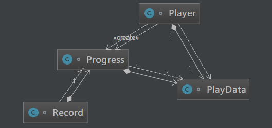

原文出处:本文由博客园博主知了一笑提供。
原文连接:https://www.cnblogs.com/cicada-smile/p/11946728.html
原文连接:https://www.cnblogs.com/cicada-smile/p/11946728.html
本文源码：GitHub·点这里 || GitEE·点这里
一、生活场景
1、场景描述
常见的视频播放软件都具备这样一个功能：假设在播放视频西游记，如果这时候切换播放视频红楼梦，当再次切回播放西游记时，视频会从上次切走的时间点继续播放。下面基于备忘录设计模式来描述该场景流程。
2、场景图解

3、代码实现
public class C01_InScene {
public static void main(String[] args) {
Record record = new Record() ;
Player player = new Player() ;
PlayData pd1 = new PlayData("西游记","19:19") ;
PlayData pd2 = new PlayData("红楼梦","29:19") ;
player.setPlayData(pd1);
player.saveProgress() ;
System.out.println("正在播放："+
player.getPlayData().getVideoName()+":"+
player.getPlayData().getPlayTime());
record.put(new Progress(pd1));
System.out.println("===切换播放视频===");
player.setPlayData(pd2);
player.saveProgress() ;
System.out.println("正在播放："+
player.getPlayData().getVideoName()+":"+
player.getPlayData().getPlayTime());
record.put(new Progress(pd1));
System.out.println("===切回上个视频===");
player.resumeProgress(record.get(pd1.getVideoName()));
System.out.println("正在播放："+
player.getPlayData().getVideoName()+":"+
player.getPlayData().getPlayTime());
}
}
/**
* 视频播放器
*/
class Player {
private PlayData playData ;
public PlayData getPlayData() {
return playData;
}
public void setPlayData(PlayData playData) {
this.playData = playData;
}
public Progress saveProgress (){
return new Progress(playData) ;
}
public void resumeProgress (Progress progress){
playData = progress.getPlayData() ;
}
}
/**
* 播放进度
*/
class Progress {
private PlayData playData ;
public Progress (PlayData playData){
this.playData = playData ;
}
public PlayData getPlayData() {
return playData ;
}
}
/**
* 播放记录
*/
class Record {
private Map<String,Progress> dataMap = new HashMap<>() ;
public void put (Progress progress){
dataMap.put(progress.getPlayData().getVideoName(),progress) ;
}
public Progress get (String videoName){
return dataMap.get(videoName) ;
}
}
/**
* 播放状态描述
*/
class PlayData {
private String videoName ;
private String playTime ;
public PlayData(String videoName, String playTime) {
this.videoName = videoName;
this.playTime = playTime;
}
public String getVideoName() {
return videoName;
}
public void setVideoName(String videoName) {
this.videoName = videoName;
}
public String getPlayTime() {
return playTime;
}
public void setPlayTime(String playTime) {
this.playTime = playTime;
}
}执行效果：
正在播放：西游记:19:19
===切换播放视频===
正在播放：红楼梦:29:19
===切回上个视频===
正在播放：西游记:19:19二、备忘录模式
1、基础概念
备忘录模式属于行为型模式，其用意在不破坏封装性的前提下，捕获一个对象的内部状态，并在该对象之外保存这个状态。后续可将该对象恢复到原先保存的状态。备忘录对象主要用来记录一个对象的某种状态，或者某些数据，当要做回退时，可以从备忘录对象里获取原来的数据进行恢复操作。
2、模式图解
3、核心角色
- 备忘录角色
负责保存对象状态的记录，即Originator内部状态。
- 发起人角色
创建一个含有当前的内部状态的备忘录对象，用来保存状态。
- 守护者对象
提供合理的方式，负责保存多个备忘录对象。
4、源码实现
public class C02_Memento {
public static void main(String[] args) {
Originator originator = new Originator();
Caretaker caretaker = new Caretaker();
originator.setState("状态1:State01");
caretaker.add(originator.saveStateMemento());
originator.setState("状态2:State02");
caretaker.add(originator.saveStateMemento());
System.out.println("当前的状态是 =" + originator.getState());
// 恢复状态
originator.getStateFromMemento(caretaker.get(0));
System.out.println("当前的状态是 =" + originator.getState());
}
}
/**
* 守护者对象
*/
class Caretaker {
private List<Memento> mementoList = new ArrayList<>();
public void add(Memento memento) {
mementoList.add(memento);
}
public Memento get (int index) {
return mementoList.get(index);
}
}
/**
* 备忘录角色
*/
class Memento {
private String state;
public Memento(String state) {
super();
this.state = state;
}
public String getState() {
return state;
}
}
/**
* 发起人角色
*/
class Originator {
private String state;
public String getState() {
return state;
}
public void setState(String state) {
this.state = state;
}
public Memento saveStateMemento() {
return new Memento(state);
}
public void getStateFromMemento(Memento memento) {
state = memento.getState();
}
}三、模式总结
1、优缺点描述
备忘录模式提供一种可以恢复状态的机制，实现状态的封装，能够比较方便地回到某个历史的状态；常常与命令模式和迭代器模式一同使用。如果类的成员变量过多，会占用比较大的内存资源，为了节约内存，备忘录模式可以和原型模式配合使用。
2、应用场景
- 浏览器的前进和回退;
- 数据库备份与还原;
- 编辑器
Ctrl+Z撤销; - 虚拟机生成快照与恢复;
- Git版本管理，代码的提交和回滚。
四、源代码地址
GitHub·地址
https://github.com/cicadasmile/model-arithmetic-parent
GitEE·地址
https://gitee.com/cicadasmile/model-arithmetic-parent：备忘录模式2.png)